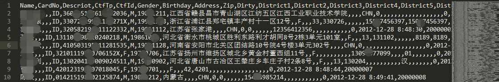
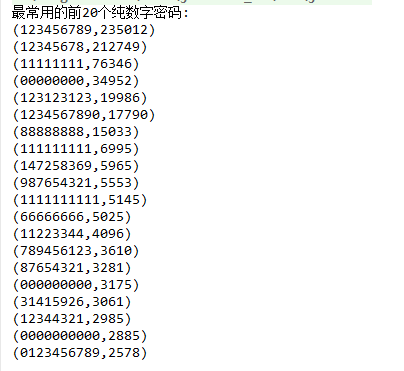
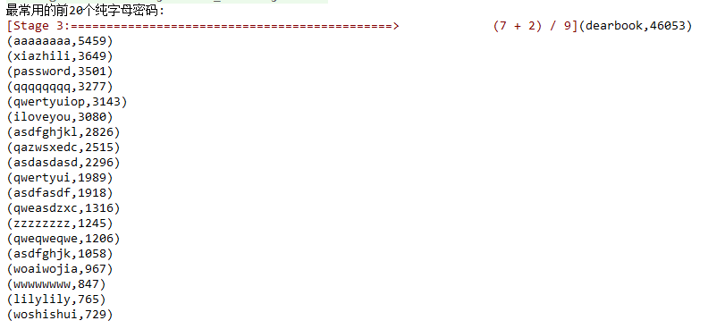

2000W开房数据
数据格式
Name,CardNo,Descriot,CtfTp,CtfId,Gender,Birthday,Address,Zip,Dirty,District1,
District2,District3,District4,District5,District6,FirstNm,LastNm,Duty,Mobile,Tel,
Fax,EMail,Nation,Taste,Education,Company,CTel,CAddress,CZip,Family,Version,id
数据预览
为了保护用户隐私,相关数据打码了.

开房数据分析
因为是单机local模式运行,用其中一个文件作为测试数据.感兴趣的可以全部加载进来,放在集群里跑一跑.
sortbykey是对每个分区中的数据进行排序,如果想要全局排序,把分区数设置为1
- 分析开房次数TOP10用户(第0,3,4三个字段确定唯一的用户)
val conf = new SparkConf().setAppName("KaiFan").setMaster("local[*]")
val sc = new SparkContext(conf)
// 酒店开房数据的字段
// Name,CardNo,Descriot,CtfTp,CtfId,Gender,Birthday,Address,Zip,Dirty,District1,District2,District3,District4,District5,District6,FirstNm,LastNm,Duty,Mobile,Tel,Fax,EMail,Nation,Taste,Education,Company,CTel,CAddress,CZip,Family,Version,id
var hotel1RDD = sc.textFile("G:\\2000W\\1-200W.csv")
// var hotel2RDD = sc.textFile("G:\\2000W\\200W-400W.csv")
// var hotel3RDD = sc.textFile("G:\\2000W\\400W-600W.csv")
// var hotel4RDD = sc.textFile("G:\\2000W\\600W-800W.csv")
// var hotel5RDD = sc.textFile("G:\\2000W\\800W-1000W.csv")
// var hotel6RDD = sc.textFile("G:\\2000W\\1000W-1200W.csv")
// var hotel7RDD = sc.textFile("G:\\2000W\\1200W-1400W.csv")
// var hotel8RDD = sc.textFile("G:\\2000W\\1400W-1600W.csv")
// var hotel9RDD = sc.textFile("G:\\2000W\\1600w-1800w.csv")
// var hotel10RDD = sc.textFile("G:\\2000W\\1800w-2000w.csv")
// var hotelRDD = hotel1RDD ++ hotel2RDD ++ hotel3RDD ++ hotel4RDD ++ hotel5RDD ++ hotel6RDD ++ hotel7RDD ++ hotel8RDD ++ hotel9RDD ++ hotel10RDD
var hotelRDD = hotel1RDD
// 分析开房次数TOP10用户(第0,3,4三个字段确定唯一的用户)
val tmpRDD=hotelRDD.map(line=>line.toString().split(",")).filter(_.length==33)
val result=tmpRDD.map(arr=> (arr(0),arr(3),arr(4))).map(arr=>(arr,1)).reduceByKey(_+_).sortBy(arr=>arr._2,false)
result.take(10).foreach(println)
- 统计一天中,各个小时离店的人数
先去除脏数据,然后从时间字段里过滤出小时部分.然后统计小时的词频
val hourRDD = hotelRDD.map(line => line.toString().split(",")).filter(_.length == 33).filter(arr => arr(31).trim.length != 0)
.map(arr => arr(31)).map(str => str.split("[- :]")).filter(arr => arr.length == 6)
.map(arr => arr(3).toInt).map(hour => (hour, 1)).reduceByKey(_ + _).map { case (x, y) => (y, x)}
// 用sortbykey进行排序,然后再取前10
val sortedHourRDD=hourRDD.sortByKey(false, 1)
sortedHourRDD.take(10).foreach(println)
println("--------------------------------")
// 对未排序的序列,调用top(n)算子,底层帮你排序,然后取topn数据.
hourRDD.top(10).foreach(println)
- 性别分布统计
// 性别分布统计
val sexRDD=hotelRDD.map(line=> line.toString().split(",")).filter(_.length==33).filter(arr=>arr(31).trim.length!=0)
.map(arr=>arr(5))
// 过滤掉脏数据
.filter(_.trim.length==1)
.filter(sex=>(sex=="F" || sex=="M"))
.map((_,1))
// 对性别字段进行统计
.reduceByKey(_+_)
sexRDD.foreach(println)
- 开房的年龄分布
// 年龄分布统计(从身份证中截取出身年份,然后用今年减去即可)
val ageRDD = hotelRDD.map(line => line.toString().split(",")).filter(_.length == 33)
.filter(arr => arr(3) == "ID") //只取ID类型的用户
.filter(arr => arr(4).length == 18) //确保身份证号的位数是对的
.map(_ (4))
.filter("^[1-9]\\d{5}[1-9]\\d{3}((0\\d)|(1[0-2]))(([0|1|2]\\d)|3[0-1])\\d{3}([0-9]|X)$".r.pattern.matcher(_).matches())
.map(num => num.substring(6, 10)) // 取出年份
.map(2016 - _.toInt)
.filter(age => (age > 0 && age < 110))
.map((_, 1))
.reduceByKey(_ + _)
.map { case (x, y) => (y, x) }
.sortByKey(false, 1)
println(ageRDD.count())
ageRDD.foreach(println)
CSDN用户数据分析
数据格式预览
以免泄露别人的信息,以下的信息我做了额外的增加
zdgs # 12344fd321 # zdfdag@csdn.net
LaafoZheng # 6702fsd03313747 # chenfdagming_zheng@163.com
fstfaao # 730df413 # fstafao@tom.com
hufdwolf # 25352gf63 # hujiadfye@263.net
cafaddcjl # KIC43aafdk6! # ccegfdsdcjl@21cn.com
数据分析
- 分析最多人使用的TOPn个密码
val csdnRDD = sc.textFile("G:\\600W-CSDN\\csdnuser.txt")
println(s"csdn一共泄露了: ${csdnRDD.count()} 个用户数据")
// cafaddcjl # KIC43aafdk6! # ccegfdsdcjl@21cn.com
// 分析最多人使用的TOPn个密码
val pwRDD = csdnRDD.map(line => line.toString.split(" # "))
.map(_ (1))
.map((_, 1)).reduceByKey(_ + _)
.map { case (x, y) => (y, x) }.sortByKey(false)
.map { case (x, y) => (y, x) }
println("最常用的前50个密码: ")
pwRDD.take(50).foreach(println)
- 统计使用纯数字作为密码的人数
val numPwRDD = csdnRDD.map(line => line.toString.split(" # "))
.map(_ (1))
.filter("\\d+".r.pattern.matcher(_).matches())
.map((_, 1)).reduceByKey(_ + _).sortBy(_._2, false)
println("最常用的前20个纯数字密码: ")
numPwRDD.take(20).foreach(println)

- 统计使用纯字母作为密码的人数
val letterRDD = csdnRDD.map(line => line.toString.split(" # "))
.map(_ (1))
.filter("[a-zA-Z]+".r.pattern.matcher(_).matches())
.map((_, 1)).reduceByKey(_ + _).sortBy(_._2, false)
println("最常用的前20个纯字母密码: ")
letterRDD.take(20).foreach(println)

- 声明:
- 统计指标来源与网络上的博客
- 数据也来自于网络,想要数据的可以联系我